ALIGNMENT PENDING. Teacher confirmation is required for Evidence.
Session A · Lesson 2
Build the roof from your own walls
Continue C1, build the separate roof and keep a recoverable C2.
TODAYSeated roof, clean ridge and independent smaller-roof choice.
01
Open C1 and make a separate C2 copy
IN SHORTWall top Z 3; original C1 retained.
READ ALOUD
DOCUMENT: Your own C2_Cottage_Roof_v02.blend SELECT: Cottage / Object Mode TOOLS / ROUTE: File > Open / Save As
EXPLANATION FRAMESI selected ___ in ___ Mode. I expected ___. I saw ___. I changed ___ and tested ___.
1 · Continue your own walls
Recall first, without the workbook: What does Object Mode change? Why is the wall centre Z 1.5? What stays the same when you Apply Scale? Say your answers, then check them.
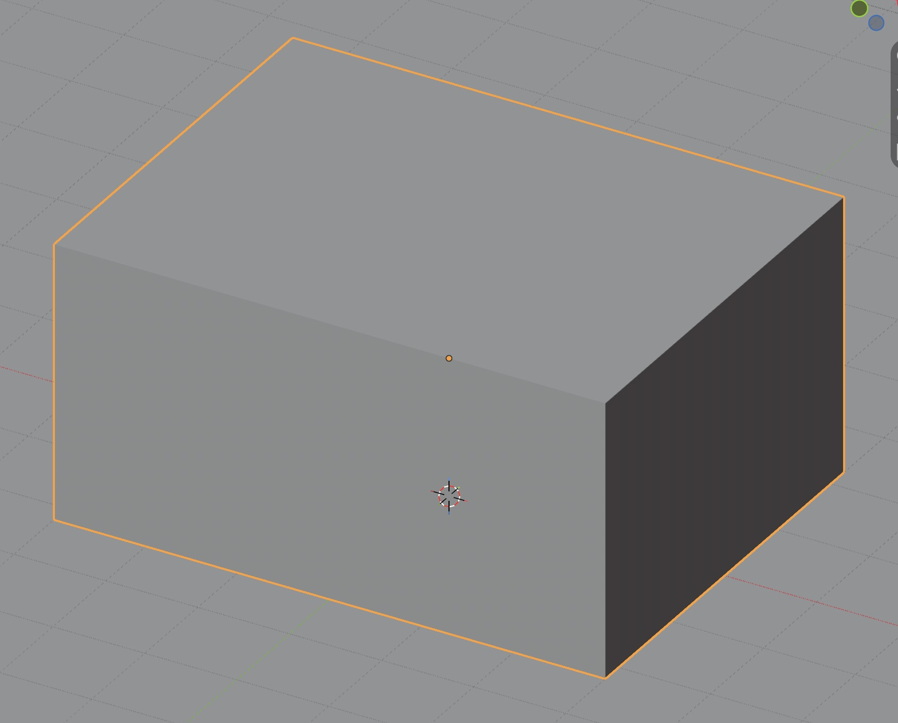
Incoming manual test geometry: the grounded C1 wall block. Your own C1 is the learner starting point.
1. File > Open your own C1_Cottage_v01.blend in a safe session. Keep the shared film master closed. Check Cottage is 6 × 4.5 × 3 m at Location 0, 0, 1.5 with Scale 1, 1, 1. Snow ground stays at Z 0.
2. File > Save As into your approved private project folder. Use C2_Cottage_Roof_v02.blend. Cancel any overwrite warning. Keep C1 unchanged so you can recover a known wall checkpoint.
WHY: roof work depends on correct wall height. CHECK: walls reach Z 3 and no roof exists yet. FIX: wrong file or dimensions? Return to the named C1 checkpoint and correct the wall before adding new geometry.
A supplied recovery file is a comparison or restart aid; it does not show that you personally built the walls.
STEP CHECKLIST
GLOSSARY
Object Mode: Mode for whole-object operations.
Dimensions: Actual size along X, Y and Z.
Location: Where the object centre is placed.
Apply Scale: Keep visible size while resetting scale multipliers to one.
Overhang: Roof extending beyond the wall outline.
WHYA readable cottage needs a clean seated roof before its details.
CHECKWall top Z 3; original C1 retained.
FIXCheck the exact file and walls before building.
WORKED EXAMPLE · DIFFERENT OBJECTDifferent case: a 4 m wall top and 1.2 m roof height require centre Z 4.6; the base remains Z 4.
STRETCH (AFTER THE CHECK PASSES)After the check, choose a different practice pitch and justify the height and centre.
02
Build the already-seated roof box
IN SHORTBox bottom Z 3; top Z 4.1; Scale 1 / 1 / 1.
READ ALOUD
DOCUMENT: Your own C2_Cottage_Roof_v02.blend SELECT: new Roof / Object Mode / N Item TOOLS / ROUTE: Add Mesh Cube; exact fields; Apply Scale; Right view
EXPLANATION FRAMESI selected ___ in ___ Mode. I expected ___. I saw ___. I changed ___ and tested ___.
2 · Make a seated roof box
3. Put the pointer in the 3D Viewport. Add > Mesh > Cube; or F3, type Add Cube and choose the mesh command. Press F2, name it Roof, then confirm. Do not add it in Edit Mode.
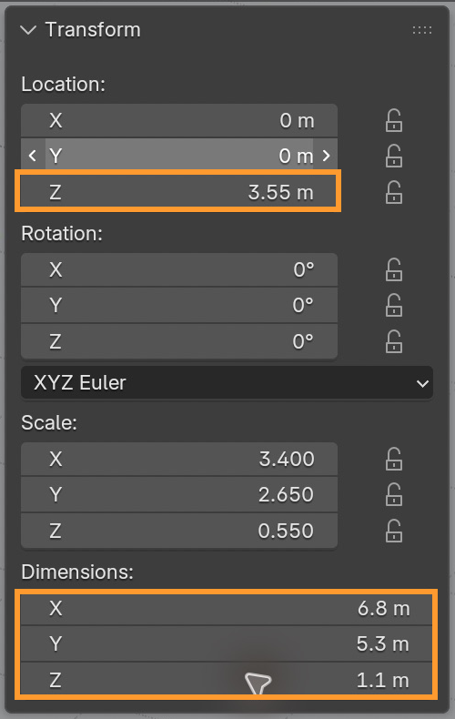
Before Apply Scale: actual N > Item readouts. Orange outlines mark centre height and Dimensions.
4. Set Location X 0, Y 0, Z 3.55 m. Rotation stays 0°, 0°, 0°. Set Dimensions X 6.8, Y 5.3, Z 1.1 m. Commit each field with Enter.
5. With Roof selected, Object > Apply > Scale; or F3 > Apply Scale > Object / Apply / Scale. Scale becomes 1, 1, 1 while the box keeps its size.
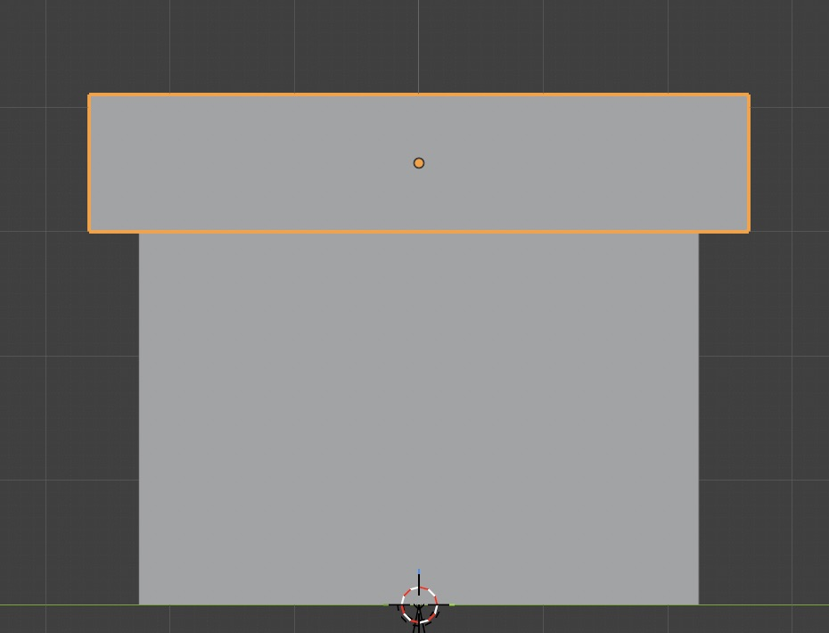
Actual Right end view: the rectangular roof box meets the walls and extends beyond both sides.
The box is already seated: 3.55 − half of 1.1 = 3 m. Its top is Z 4.1. Do not guess a downward move. Its footprint extends 0.4 m beyond each side of the walls.
WHY: place the lower surface correctly before editing the ridge. CHECK: use View > Viewpoint > Right; its rectangular end meets the wall top. FIX: floating box? Recheck Z 3.55 and height 1.1 before continuing.
Views: menu routes need no numpad. On a numpad, 3 = Right and 1 = Front.
STEP CHECKLIST
GLOSSARY
Object Mode: Mode for whole-object operations.
Dimensions: Actual size along X, Y and Z.
Location: Where the object centre is placed.
Apply Scale: Keep visible size while resetting scale multipliers to one.
Overhang: Roof extending beyond the wall outline.
WHYA readable cottage needs a clean seated roof before its details.
CHECKBox bottom Z 3; top Z 4.1; Scale 1 / 1 / 1.
FIXRecheck centre and height; do not guess a seating move.
WORKED EXAMPLE · DIFFERENT OBJECTDifferent case: a 4 m wall top and 1.2 m roof height require centre Z 4.6; the base remains Z 4.
STRETCH (AFTER THE CHECK PASSES)After the check, choose a different practice pitch and justify the height and centre.
03
Select only four upper vertices
IN SHORTFour upper vertices; lower four unselected.
READ ALOUD
DOCUMENT: Your own C2_Cottage_Roof_v02.blend SELECT: Roof / Front / Edit Mode / Vertex / X-Ray TOOLS / ROUTE: Tab;1;Alt+A;Alt+Z;B box select
EXPLANATION FRAMESI selected ___ in ___ Mode. I expected ___. I saw ___. I changed ___ and tested ___.
3 · Select only the upper row
6. Choose View > Viewpoint > Front (numpad 1). Press Tab for Edit Mode. Choose the Vertex Select dot icon, or press the top-row 1 key. Alt+A deselects every vertex.
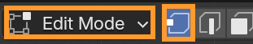
Actual mode and Vertex Select controls, outlined in orange.
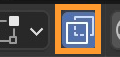
X-Ray control; Alt+Z toggles it.
7. Turn X-Ray on with Alt+Z or the overlapping-square icon. Press B and drag a box around the upper row only. Include both upper corners; stop above the lower row.
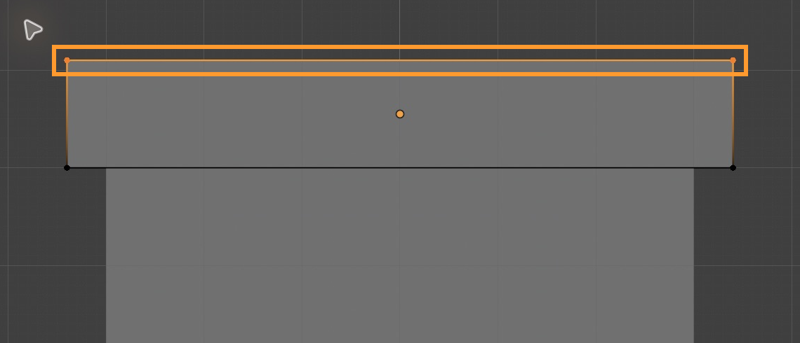
Actual Front view selection: the upper row is orange; the lower row remains black. The orange rectangle is an added annotation around the selected row.
WHY: Front overlaps front/back vertex pairs; X-Ray includes the hidden pair. CHECK: four selected vertices, not two or eight. Viewport Overlays > Text Info > Statistics can show the count. FIX: Alt+A, check X-Ray, then redraw the smaller upper box.
STEP CHECKLIST
GLOSSARY
Vertex: A mesh corner point.
Edit Mode: Mode for reshaping selected mesh parts.
Vertex Select: Selection mode that targets corner points.
X-Ray: See and select hidden mesh parts through surfaces.
Box Select: Select components inside a dragged rectangle.
WHYA readable cottage needs a clean seated roof before its details.
CHECKFour upper vertices; lower four unselected.
FIXDeselect, check X-Ray and redraw the upper box.
WORKED EXAMPLE · DIFFERENT OBJECTDifferent case: a 4 m wall top and 1.2 m roof height require centre Z 4.6; the base remains Z 4.
STRETCH (AFTER THE CHECK PASSES)After the check, choose a different practice pitch and justify the height and centre.
04
Collapse and merge the ridge
IN SHORTTriangularend;twoverticesremoved;6 vertices / 5 faces.
READ ALOUD
DOCUMENT: Your own C2_Cottage_Roof_v02.blend SELECT: selected upper row / Edit Mode TOOLS / ROUTE: S Y 0; Mesh Merge By Distance;Right view
EXPLANATION FRAMESI selected ___ in ___ Mode. I expected ___. I saw ___. I changed ___ and tested ___.
4 · Form and clean the ridge
8. Press S, Y, 0, Enter. Only the upper front/back pairs collapse to their shared Y centre. Choose Right view to inspect the triangular end. Keep the ridge selected.
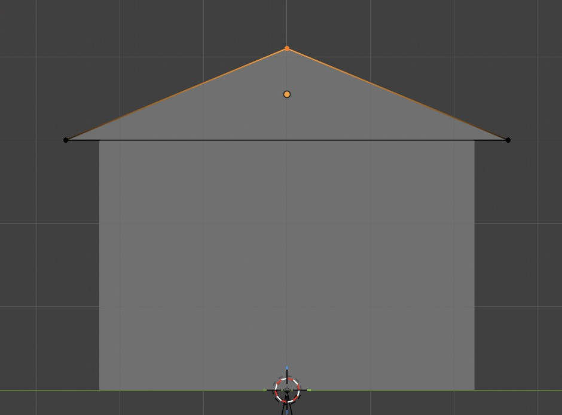
After S Y 0: triangular profile; the ridge still contains overlapping pairs.
9. Press F3 and type Merge by Distance. Choose Mesh > Merge > By Distance. Keep the small default distance. Expect “Removed 2 vertices”. Do not merge the whole scene.
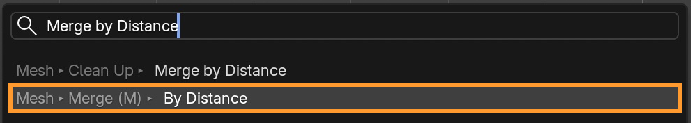
Actual operator search: Mesh > Merge > By Distance is selected and outlined.
After merging, check that the visible triangular profile remains. Expect two vertices removed; the saved model should have six vertices and five faces.
WHY: the overlapping pairs become a clean ridge. CHECK: the roof has 6 vertices and 5 faces; its base stays Z 3 and ridge Z 4.1. FIX: still a rectangle? Use Right view. Flat slab? Undo and reselect only the four upper vertices.
STEP CHECKLIST
GLOSSARY
Ridge: Line where two roof slopes meet.
Vertex: A mesh corner point.
Edit Mode: Mode for reshaping selected mesh parts.
Merge by Distance: Combine selected vertices within a small distance.
WHYA readable cottage needs a clean seated roof before its details.
FIXCheck view before editing; a flat roof requires selection repair.
WORKED EXAMPLE · DIFFERENT OBJECTDifferent case: a 4 m wall top and 1.2 m roof height require centre Z 4.6; the base remains Z 4.
STRETCH (AFTER THE CHECK PASSES)After the check, choose a different practice pitch and justify the height and centre.
05
Inspect, reopen and make a smaller roof
IN SHORTC2 preserved; own smaller-roof choice explained.
READ ALOUD
DOCUMENT: Your own C2_Cottage_Roof_v02.blend SELECT: own C2 copy, then separate practice file TOOLS / ROUTE: X-Ray off;Tab;orbit;Save/Open;SaveAs
EXPLANATION FRAMESI selected ___ in ___ Mode. I expected ___. I saw ___. I changed ___ and tested ___.
5 · Inspect, save and reopen
10. Turn X-Ray off. Press Tab back to Object Mode. Orbit from the C1 controls so you can see a roof slope, the triangular end and the walls. Navigation must not move Roof or Cottage.
Current manual result: gabled roof on the wall block. Inspect contact and overhang around it.
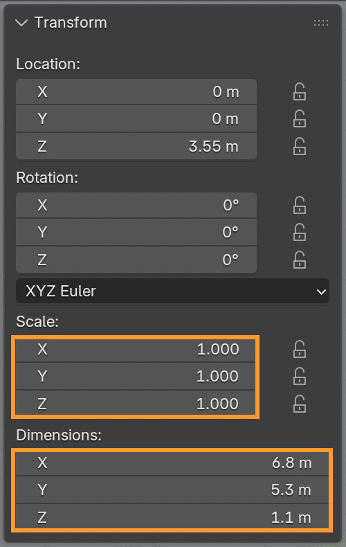
Actual finished readouts: Scale 1, 1, 1; Dimensions 6.8 × 5.3 × 1.1 m.
11. File > Save. File > Open the exact C2_Cottage_Roof_v02.blend in the same approved private folder. Check Roof, Cottage and Snow ground remain named. Inspect the triangular end and wall contact again.
WHY: the next details lesson needs your recoverable C2 checkpoint. CHECK: no gap at the wall top, 0.4 m overhang on each side and a straight X-direction ridge. FIX: wrong file opened? Check folder and filename before editing.
Your smaller building roof
The director also needs a smaller storage building. Open your separate C1_Storage_Practice_v02.blend, with Storage body 3 × 2 × 2.2 m on the same ground. Save As C2_Storage_Roof_Practice_v03.blend. Cancel any overwrite warning.
Create a separate roof for Storage body. Choose a sensible positive overhang and a different roof height. Calculate the starting box centre so its base meets the storage wall top. Align its X/Y centre with Storage body’s chosen X/Y location. Use the taught upper-row selection, S Y 0 and Merge by Distance.
Different-case model: a 4 m high kiosk wall with a 1.2 m roof box needs its roof centre at Z 4.6. Half the roof height is 0.6; 4.6 − 0.6 = 4. Its selected upper row collapses along the width while the bottom stays seated.
Choose, create and defend your storage roof. Do not copy a finished answer. Save and reopen the practice version. Explain your chosen height, centre and overhang. Adapt if your teacher changes the wall height or selected view.
My chosen height / centre and why: __________________________ My overhang and why: ____________________________________ Intended result → mismatch → cause → one change → test: ________________________________________________________
Check your understanding
1. Why is the 1.1 m roof box centred at Z 3.55 when the wall top is Z 3?
2. In Front view, why do you need X-Ray and a box around only the upper row?
3. What does S Y 0 change, and what must remain unchanged?
4. Why use Merge by Distance after collapsing the ridge? What result do you expect?
5. Your roof still looks rectangular. What view would reveal its triangular end, and why?
Show Me Show your personally built roof in an end view and a useful orbit view. Reopen your own copy. Explain one selection choice, the seated height calculation and your smaller-roof decision. Adapt to a changed wall height.
Before leaving [ ] C2 and separate practice copies saved and reopened. [ ] Ridge, overhang, wall contact and readouts checked. [ ] Original C2 kept for door/windows/chimney. [ ] Private backup and next action recorded. Date and collection destination remain teacher-confirmation pending. Local notes do not submit your work.
STEP CHECKLIST
GLOSSARY
Dimensions: Actual size along X, Y and Z.
Location: Where the object centre is placed.
Overhang: Roof extending beyond the wall outline.
Evidence: A teacher-confirmed record, not a tutorial tick.
WHYA readable cottage needs a clean seated roof before its details.
CHECKC2 preserved; own smaller-roof choice explained.
FIXCheck the seating relationship and exact filename, then retest.
WORKED EXAMPLE · DIFFERENT OBJECTDifferent case: a 4 m wall top and 1.2 m roof height require centre Z 4.6; the base remains Z 4.
STRETCH (AFTER THE CHECK PASSES)After the check, choose a different practice pitch and justify the height and centre.
Before you submit
Student QA.
Evidence conversation
Keep it short and specific.
SENTENCE FRAMESI selected ___ in ___ Mode. I expected ___. I saw ___. I changed ___ and tested ___.
Sources and authorship
Method references.
Photo credits
Figures marked Illustration are drawn, not screenshots. Step values are starting points authored for this project. Draft for teacher review; not yet classroom-piloted.
Inspect the captured roof construction stills
These are real captured UI stills from the manual roof test. This is not a screen recording. Native setup and save/readback used isolated authoring methods; the ordinary student File Save As/Open route remains untested.
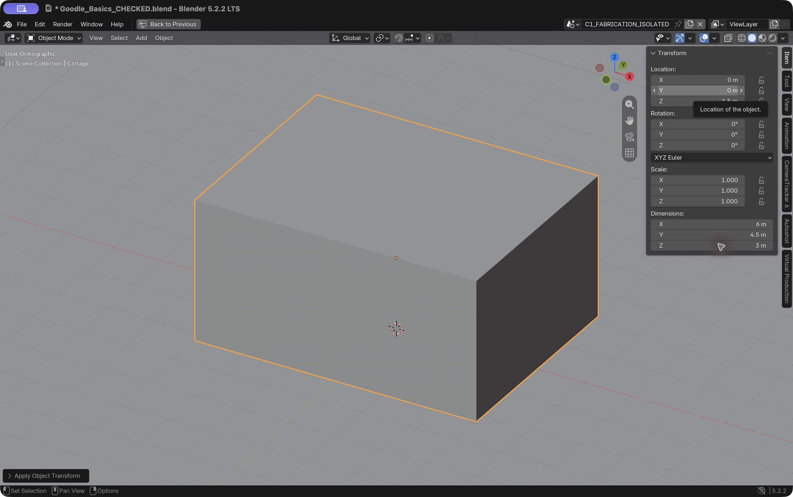
01-incoming-c1
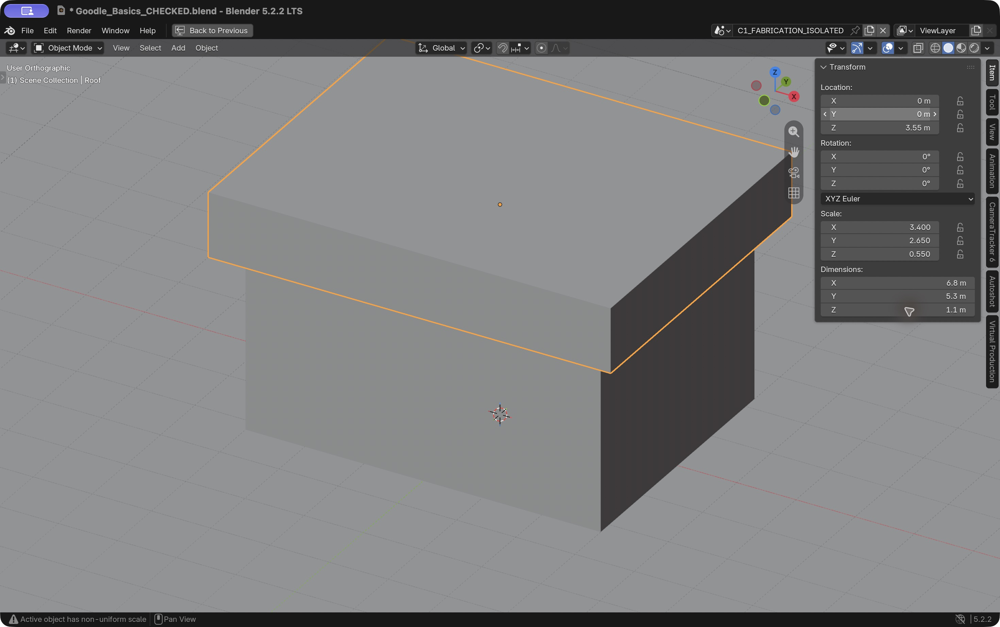
02-roof-box-values
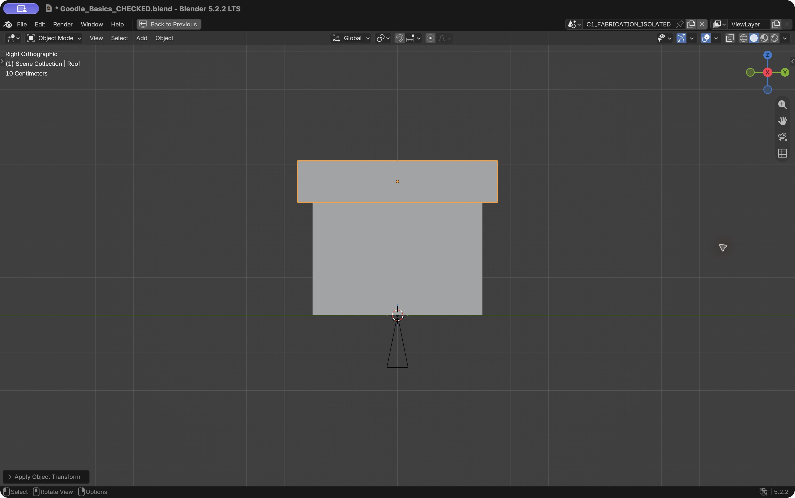
03-right-starting-rectangle-seated
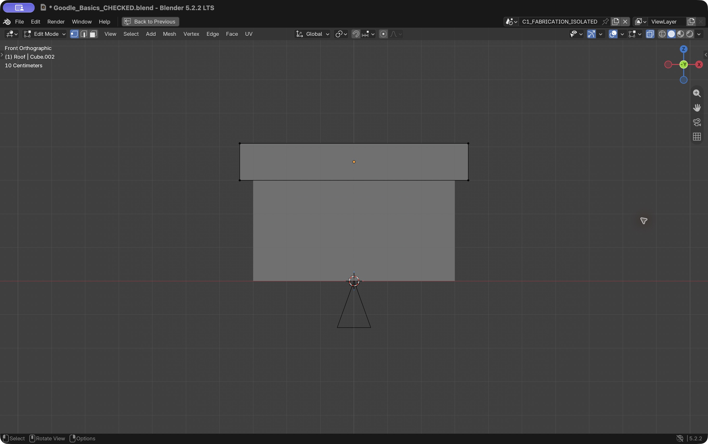
04-front-edit-vertex-xray-before-selection
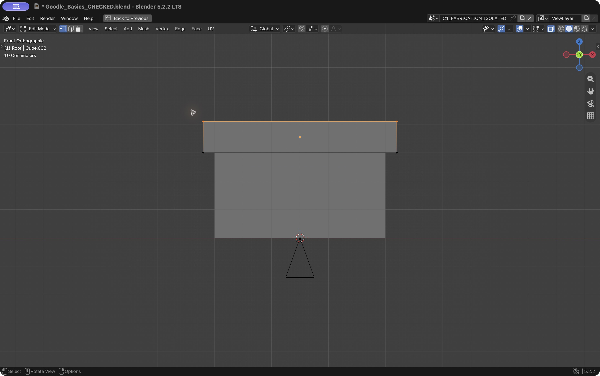
05-only-top-row-selected
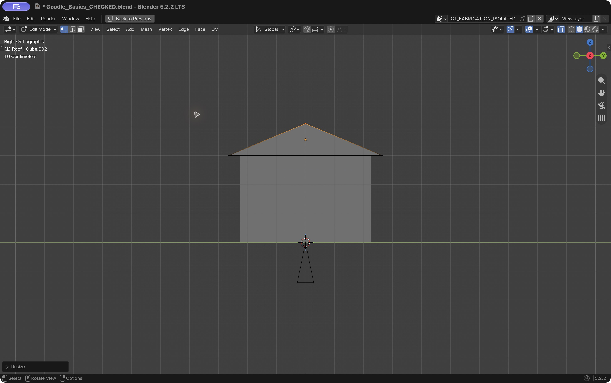
06-right-collapsed-ridge-before-merge
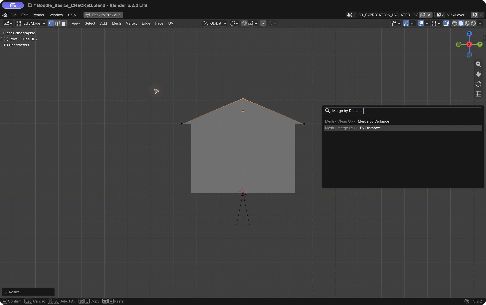
07-merge-by-distance-action
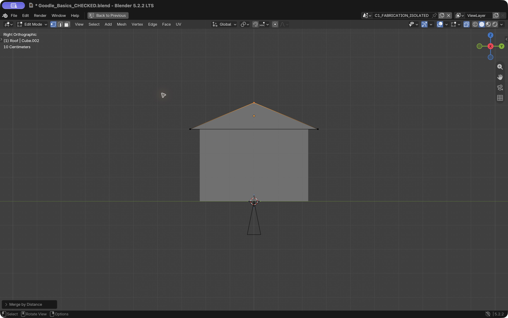
08-merged-ridge-two-vertices-removed
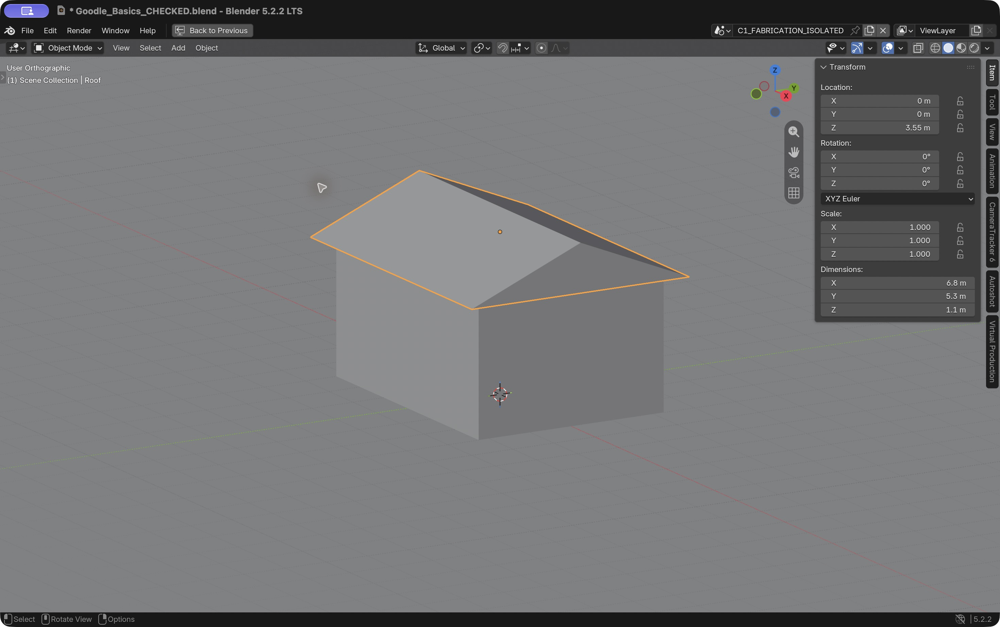
09-cottage-with-seated-gabled-roof
Keep a local practice draft.
Keep a downloaded backup on shared computers. This is local practice, not teacher submission. The school collection route remains unverified.